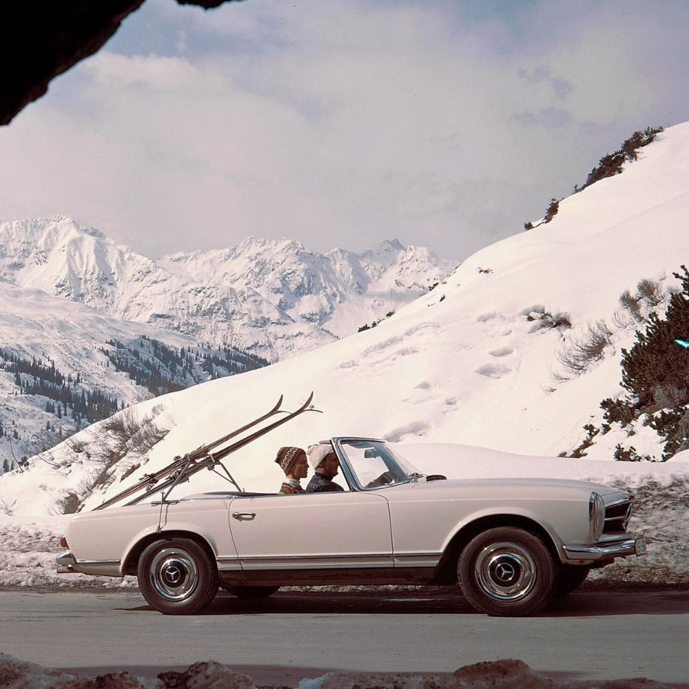
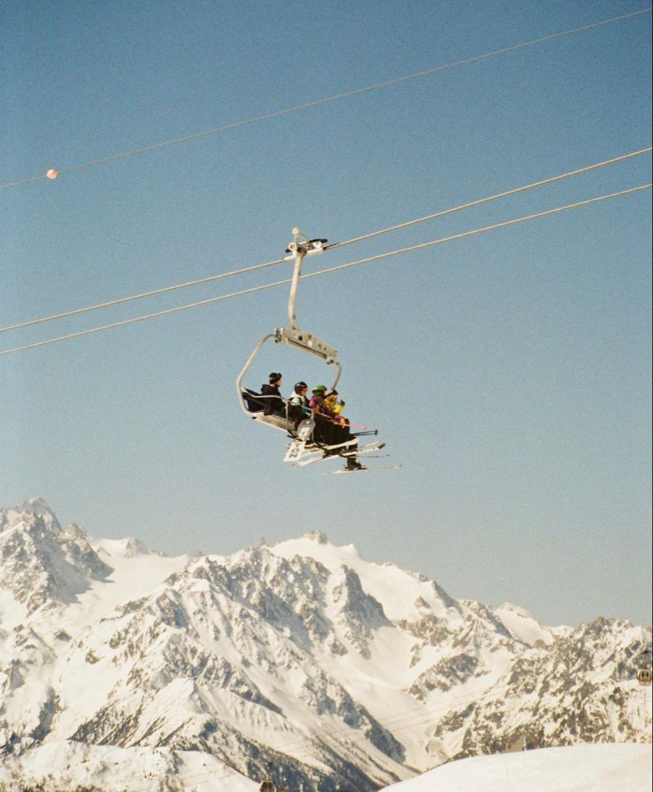

Our Vision
 Here, at Laurent Saison, we believe that the quiet elegance of the mountains belongs to everyone— not just those with private chalets, monogrammed luggage, or a family tree older than the Matterhorn. We’re here to make old-money charm feel less like an exclusive club, and more like a feeling you can step into—calm, confident, and beautifully put-together.
To us, great style isn’t about wealth.
It’s about intention. 
It’s about choosing pieces that make you feel grounded, capable, and subtly refined,
whether you’re walking into a café or watching the first snowfall settle on the peaks.
Our inspiration comes from nature: the clean lines of fresh snow,
the warmth of wood and wool,
the timeless dignity of alpine living.
We want to bring that feeling to everyone—
no trust fund required.
Just a love for the outdoors, an appreciation for craftsmanship,
and the desire to look effortlessly elegant.
Welcome to Laurent Saison.
Where style feels natural.
Where luxury feels honest.
Where the mountains feel like home.